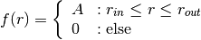
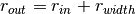

Ring2D¶
-
class
astropy.modeling.functional_models.Ring2D(amplitude=1, x_0=0, y_0=0, r_in=1, width=1, r_out=None, **kwargs) [edit on github][source]¶ Bases:
astropy.modeling.Fittable2DModelTwo dimensional radial symmetric Ring model.
Parameters: amplitude : float
Value of the disk function
x_0 : float
x position center of the disk
y_0 : float
y position center of the disk
r_in : float
Inner radius of the ring
width : float
Width of the ring.
r_out : float
Outer Radius of the ring. Can be specified instead of width.
See also
Notes
Model formula:

Where .
Attributes Summary
amplitudeparam_namesr_inwidthx_0y_0Methods Summary
evaluate(x, y, amplitude, x_0, y_0, r_in, width)Two dimensional Ring model function. Attributes Documentation
-
amplitude¶
-
param_names= ('amplitude', 'x_0', 'y_0', 'r_in', 'width')¶
-
r_in¶
-
width¶
-
x_0¶
-
y_0¶
Methods Documentation
-
static
evaluate(x, y, amplitude, x_0, y_0, r_in, width) [edit on github][source]¶ Two dimensional Ring model function.
-